Pokémon
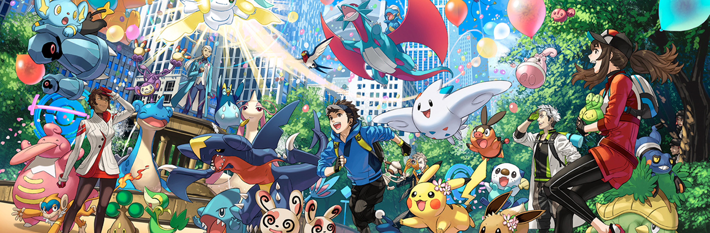Notes to Non-English Speaking Google Translator Users
Para aquellos de ustedes que hablan español, traduzcan estas páginas web de Pokémon al español usando Google Traductor. Si ha encontrado algo ofensivo, sea lo suficientemente fluido como para traducir estas páginas al español.
Pour ceux d'entre vous qui parlent français, veuillez traduire ces pages Web Pokémon en français à l'aide de Google Traduction. Si vous avez trouvé quelque chose d'offensant, veuillez parler suffisamment couramment pour localiser ces pages en français.
Für diejenigen unter Ihnen, die Deutsch sprechen, übersetzen Sie bitte diese Pokémon-Webseiten mit Google Übersetzer ins Deutsche. Wenn Sie etwas Anstößiges gefunden haben, seien Sie bitte fließend genug, um diese Seiten ins Deutsche zu lokalisieren.
Per chi parla italiano, si prega di tradurre queste pagine Web Pokémon in italiano utilizzando Google Traduttore. Se hai trovato qualcosa di offensivo, per favore sii abbastanza fluente da localizzare queste pagine in italiano.
日本語を話す方は、Google翻訳を使ってこれらのポケモンのウェブページを日本語に翻訳してください。 不適切な内容を見つけた場合は、これらのページを日本語にローカライズできるほど流暢に翻訳してください。
对于那些说简体中文的人，请使用Google翻译将这些神奇宝贝网页翻译成简体中文。 如果您发现任何令人反感的内容，请足够流利，以便将这些页面本地化为简体中文。
對於那些說繁體中文的人，請使用Google翻譯將這些神奇寶貝網頁翻譯成繁體中文。 如果您發現任何令人反感的內容，請足夠流利，以便將這些頁面本地化為繁體中文。
한국어 사용자를 위해 Google 번역을 사용하여 이 포켓몬 웹 페이지를 한국어로 번역하십시오. 불쾌감을 주는 내용이 있는 경우 이 페이지를 한국어로 현지화할 수 있을 정도로 유창하게 해 주십시오.
Cited Sources
• Wikipedia (www.wikipedia.org)
• Bulbapedia (bulbapedia.bulbagarden.net)
• The Pokémon Wiki (pokemon.fandom.com)
Introduction
I'm been a fan of Pokémon that I'm interested in, these Pokémon webpages lets you check out the Pokédex pages about Pokémon species, my Pokémon listings, a gallery of my own Pokémon drawings.
Pokémon Listings by Sorts
Here you may click on these links to see my Pokémon listings by any kind of sort.
By National Pokédex Number
English • Japanese • German • French • Korean • Chinese • Russian • Thai
By Regional Pokédex Number
Kanto • New • Johto • Hoenn (Gen III • Gen VI) • Sinnoh • Unova (BW • B2W2)
Kalos • Alola (SM • USUM) • Galar (Isle of Armor • Crown Tundra) • Hisui
Unown Mode • In No Regional Pokédex • In Every Regional Pokédex
By Atrributes
Ability • Category • Habitat • Color • Gender Differences • Egg Group • Shape
By Evolutions
Evolution Family • No Evolution Family • Levels
By In-Game Stats
Base Stats (Gen I • Gen II-V • Gen VI • Gen VII • Fully Evolved)
Catch Rate • EVs Given in Battle (Gen III • Gen IV • Gen V-VI • Gen VII)
Egg Cylces • Experience Type • Base Friendship • Call Rate
By Various Other Sorts
Pal Park Area • Pokéwalker • Fan Favorites (Preliminary • Final) • Super Training Energy Shot
Pokémon Polls
Here you may fill out my own polls of Pokémon by popularity, etc.
Pokémon by Popularity
Generation I • Generation II • Generation III
Generation IV • Generation V • Generation VI
Generation VII • Generation VIII • Generation IX
My Own Pokémon Drawings Gallery
Here you may see a gallery of my own drawings from general stuff, games, anime, movies, etc.
Megamax
Megamax Mainstream Video Game Pokémon Conceptual Artwork Designs - These are redesigns of returning Pokémon from the main series franchise, plus exclusive newly-introduced Pokémon for Pokémon Megamax, the mainstream fighting RPGs from the Pokémon alternate continuity video game franchise of the same name.
Megamax Mainstream Video Game Human Character Conceptual Artwork Designs - These are redesigns of returning human characters from the mainstream franchise, plus exclusive newly-introduced human characters for Pokémon Megamax, the mainstream fighting RPGs from the Pokémon alternate continuity video game franchise of the same name.
Megamaxes - Type of replacement successor gimmicks to Mega Evolutions, Primal Reversions, an Ash-Greninja Bond Phenomenon, an Ultra Burst, Dynamaxes and Gigantamaxes, an Eternamax, and Terrastal Phenomenon for Pokémon temporary transformations that are as ginormously hulked up as professional bodybuilders and weightlifters. Body proportions of these transformations can be compact cartoonish (5½ head inches or under), semirealistic (6½ head inches), realistic (7½ head inches), super-elongated (10½ head inches), semi-gianormous (11½ head inches) or fully gianormous (12½ head inches). Fully gianormous transformations of these transformations appear to be gianormously sumo-hulking professional bodybuilders and weightlifters, but with their bodies as all extremely heavyweighted body muscle mass instead of fats.
Others
Pokémon Main Anime - These are all my own drawn pictures from the main anime of Pokémon, including based western web mangas.
Pokédex
Generation I
| ### | Pokémon |
| 1 | Bulbasaur |
| 2 | Ivysaur |
| 3 | Venusaur |
| 4 | Charmander |
| 5 | Charmeleon |
| 6 | Charizard |
| 7 | Squirtle |
| 8 | Wartortle |
| 9 | Blastoise |
| 10 | Caterpie |
| 11 | Metapod |
| 12 | Butterfree |
| 13 | Weedle |
| 14 | Kakuna |
| 15 | Beedrill |
| 16 | Pidgey |
| 17 | Pidgeotto |
| 18 | Pidgeot |
| 19 | Rattata |
| 20 | Raticate |
| 21 | Spearow |
| 22 | Fearow |
| 23 | Ekans |
| 24 | Arbok |
| 25 | Pikachu |
| 26 | Raichu |
| 27 | Sandshrew |
| 28 | Sandslash |
| 29 | Nidoran♀ |
| 30 | Nidorina |
| 31 | Nidoqueen |
| 32 | Nidoran♂ |
| 33 | Nidorino |
| 34 | Nidoking |
| 35 | Clefairy |
| 36 | Clefable |
| 37 | Vulpix |
| 38 | Ninetales |
| 39 | Jigglypuff |
| 40 | Wigglytuff |
| 41 | Zubat |
| 42 | Golbat |
| 43 | Oddish |
| 44 | Gloom |
| 45 | Vileplume |
| 46 | Paras |
| 47 | Parasect |
| 48 | Venonat |
| 49 | Venomoth |
| 50 | Diglett |
| 51 | Dugtrio |
| 52 | Meowth |
| 53 | Persian |
| 54 | Psyduck |
| 55 | Golduck |
| 56 | Mankey |
| 57 | Primeape |
| 58 | Growlithe |
| 59 | Arcanine |
| 60 | Poliwag |
| 61 | Poliwhirl |
| 62 | Poliwrath |
| 63 | Abra |
| 64 | Kadabra |
| 65 | Alakazam |
| 66 | Machop |
| 67 | Machoke |
| 68 | Machamp |
| 69 | Bellsprout |
| 70 | Weepinbell |
| 71 | Victreebel |
| 72 | Tentacool |
| 73 | Tentacruel |
| 74 | Geodude |
| 75 | Graveler |
| 76 | Golem |
| 77 | Ponyta |
| 78 | Rapidash |
| 79 | Slowpoke |
| 80 | Slowbro |
| 81 | Magnemite |
| 82 | Magneton |
| 83 | Farfetch'd |
| 84 | Doduo |
| 85 | Dodrio |
| 86 | Seel |
| 87 | Dewgong |
| 88 | Grimer |
| 89 | Muk |
| 90 | Shellder |
| 91 | Cloyster |
| 92 | Gastly |
| 93 | Haunter |
| 94 | Gengar |
| 95 | Onix |
| 96 | Drowzee |
| 97 | Hypno |
| 98 | Krabby |
| 99 | Kingler |
| 100 | Voltorb |
| 101 | Electrode |
| 102 | Exeggcute |
| 103 | Exeggutor |
| 104 | Cubone |
| 105 | Marowak |
| 106 | Hitmonlee |
| 107 | Hitmonchan |
| 108 | Lickitung |
| 109 | Koffing |
| 110 | Weezing |
| 111 | Rhyhorn |
| 112 | Rhydon |
| 113 | Chansey |
| 114 | Tangela |
| 115 | Kangaskhan |
| 116 | Horsea |
| 117 | Seadra |
| 118 | Goldeen |
| 119 | Seaking |
| 120 | Staryu |
| 121 | Starmie |
| 122 | Mr. Mime |
| 123 | Scyther |
| 124 | Jynx |
| 125 | Electabuzz |
| 126 | Magmar |
| 127 | Pinsir |
| 128 | Tauros |
| 129 | Magikarp |
| 130 | Gyarados |
| 131 | Lapras |
| 132 | Ditto |
| 133 | Eevee |
| 134 | Vaporeon |
| 135 | Jolteon |
| 136 | Flareon |
| 137 | Porygon |
| 138 | Omanyte |
| 139 | Omastar |
| 140 | Kabuto |
| 141 | Kabutops |
| 142 | Aerodactyl |
| 143 | Snorlax |
| 144 | Articuno |
| 145 | Zapdos |
| 146 | Moltres |
| 147 | Dratini |
| 148 | Dragonair |
| 149 | Dragonite |
| 150 | Mewtwo |
| 151 | Mew |
Generation II
| ### | Pokémon |
| 152 | Chikorita |
| 153 | Bayleef |
| 154 | Meganium |
| 155 | Cyndaquil |
| 156 | Quilava |
| 157 | Typhlosion |
| 158 | Totodile |
| 159 | Croconaw |
| 160 | Feraligatr |
| 161 | Sentret |
| 162 | Furret |
| 163 | Hoothoot |
| 164 | Noctowl |
| 165 | Ledyba |
| 166 | Ledian |
| 167 | Spinarak |
| 168 | Ariados |
| 169 | Crobat |
| 170 | Chinchou |
| 171 | Lanturn |
| 172 | Pichu |
| 173 | Cleffa |
| 174 | Igglybuff |
| 175 | Togepi |
| 176 | Togetic |
| 177 | Natu |
| 178 | Xatu |
| 179 | Mareep |
| 180 | Flaaffy |
| 181 | Ampharos |
| 182 | Bellossom |
| 183 | Marill |
| 184 | Azumarill |
| 185 | Sudowoodo |
| 186 | Politoed |
| 187 | Hoppip |
| 188 | Skiploom |
| 189 | Jumpluff |
| 190 | Aipom |
| 191 | Sunkern |
| 192 | Sunflora |
| 193 | Yanma |
| 194 | Wooper |
| 195 | Quagsire |
| 196 | Espeon |
| 197 | Umbreon |
| 198 | Murkrow |
| 199 | Slowking |
| 200 | Misdreavus |
| 201 | Unown |
| 202 | Wobbuffet |
| 203 | Girafarig |
| 204 | Pineco |
| 205 | Forretress |
| 206 | Dunsparce |
| 207 | Gligar |
| 208 | Steelix |
| 209 | Snubbull |
| 210 | Granbull |
| 211 | Qwilfish |
| 212 | Scizor |
| 213 | Shuckle |
| 214 | Heracross |
| 215 | Sneasel |
| 216 | Teddiursa |
| 217 | Ursaring |
| 218 | Slugma |
| 219 | Magcargo |
| 220 | Swinub |
| 221 | Piloswine |
| 222 | Corsola |
| 223 | Remoraid |
| 224 | Octillery |
| 225 | Delibird |
| 226 | Mantine |
| 227 | Skarmory |
| 228 | Houndour |
| 229 | Houndoom |
| 230 | Kingdra |
| 231 | Phanpy |
| 232 | Donphan |
| 233 | Porygon2 |
| 234 | Stantler |
| 235 | Smeargle |
| 236 | Tyrogue |
| 237 | Hitmontop |
| 238 | Smoochum |
| 239 | Elekid |
| 240 | Magby |
| 241 | Miltank |
| 242 | Blissey |
| 243 | Raikou |
| 244 | Entei |
| 245 | Suicune |
| 246 | Larvitar |
| 247 | Pupitar |
| 248 | Tyranitar |
| 249 | Lugia |
| 250 | Ho-Oh |
| 251 | Celebi |
Generation III
| ### | Pokémon |
| 252 | Treecko |
| 253 | Grovyle |
| 254 | Sceptile |
| 255 | Torchic |
| 256 | Combusken |
| 257 | Blaziken |
| 258 | Mudkip |
| 259 | Marshtomp |
| 260 | Swampert |
| 261 | Poochyena |
| 262 | Mightyena |
| 263 | Zigzagoon |
| 264 | Linoone |
| 265 | Wurmple |
| 266 | Silcoon |
| 267 | Beautifly |
| 268 | Cascoon |
| 269 | Dustox |
| 270 | Lotad |
| 271 | Lombre |
| 272 | Ludicolo |
| 273 | Seedot |
| 274 | Nuzleaf |
| 275 | Shiftry |
| 276 | Taillow |
| 277 | Swellow |
| 278 | Wingull |
| 279 | Pelipper |
| 280 | Ralts |
| 281 | Kirlia |
| 282 | Gardevoir |
| 283 | Surskit |
| 284 | Masquerain |
| 285 | Shroomish |
| 286 | Breloom |
| 287 | Slakoth |
| 288 | Vigoroth |
| 289 | Slaking |
| 290 | Nincada |
| 291 | Ninjask |
| 292 | Shedinja |
| 293 | Whismur |
| 294 | Loudred |
| 295 | Exploud |
| 296 | Makuhita |
| 297 | Hariyama |
| 298 | Azurill |
| 299 | Nosepass |
| 300 | Skitty |
| 301 | Delcatty |
| 302 | Sableye |
| 303 | Mawile |
| 304 | Aron |
| 305 | Lairon |
| 306 | Aggron |
| 307 | Meditite |
| 308 | Medicham |
| 309 | Electrike |
| 310 | Manectric |
| 311 | Plusle |
| 312 | Minun |
| 313 | Volbeat |
| 314 | Illumise |
| 315 | Roselia |
| 316 | Gulpin |
| 317 | Swalot |
| 318 | Carvanha |
| 319 | Sharpedo |
| 320 | Wailmer |
| 321 | Wailord |
| 322 | Numel |
| 323 | Camerupt |
| 324 | Torkoal |
| 325 | Spoink |
| 326 | Grumpig |
| 327 | Spinda |
| 328 | Trapinch |
| 329 | Vibrava |
| 330 | Flygon |
| 331 | Cacnea |
| 332 | Cacturne |
| 333 | Swablu |
| 334 | Altaria |
| 335 | Zangoose |
| 336 | Seviper |
| 337 | Lunatone |
| 338 | Solrock |
| 339 | Barboach |
| 340 | Whiscash |
| 341 | Corphish |
| 342 | Crawdaunt |
| 343 | Baltoy |
| 344 | Claydol |
| 345 | Lileep |
| 346 | Cradily |
| 347 | Anorith |
| 348 | Armaldo |
| 349 | Feebas |
| 350 | Milotic |
| 351 | Castform |
| 352 | Kecleon |
| 353 | Shuppet |
| 354 | Banette |
| 355 | Duskull |
| 356 | Dusclops |
| 357 | Tropius |
| 358 | Chimecho |
| 359 | Absol |
| 360 | Wynaut |
| 361 | Snorunt |
| 362 | Glalie |
| 363 | Spheal |
| 364 | Sealeo |
| 365 | Walrein |
| 366 | Clamperl |
| 367 | Huntail |
| 368 | Gorebyss |
| 369 | Relicanth |
| 370 | Luvdisc |
| 371 | Bagon |
| 372 | Shelgon |
| 373 | Salamence |
| 374 | Beldum |
| 375 | Metang |
| 376 | Metagross |
| 377 | Regirock |
| 378 | Regice |
| 379 | Registeel |
| 380 | Latias |
| 381 | Latios |
| 382 | Kyogre |
| 383 | Groudon |
| 384 | Rayquaza |
| 385 | Jirachi |
| 386 | Deoxys |
Generation IV
| ### | Pokémon |
| 387 | Turtwig |
| 388 | Grotle |
| 389 | Torterra |
| 390 | Chimchar |
| 391 | Monferno |
| 392 | Infernape |
| 393 | Piplup |
| 394 | Prinplup |
| 395 | Empoleon |
| 396 | Starly |
| 397 | Staravia |
| 398 | Staraptor |
| 399 | Bidoof |
| 400 | Bibarel |
| 401 | Kricketot |
| 402 | Kricketune |
| 403 | Shinx |
| 404 | Luxio |
| 405 | Luxray |
| 406 | Budew |
| 407 | Roserade |
| 408 | Cranidos |
| 409 | Rampardos |
| 410 | Shieldon |
| 411 | Bastiodon |
| 412 | Burmy |
| 413 | Wormadam |
| 414 | Mothim |
| 415 | Combee |
| 416 | Vespiquen |
| 417 | Pachirisu |
| 418 | Buizel |
| 419 | Floatzel |
| 420 | Cherubi |
| 421 | Cherrim |
| 422 | Shellos |
| 423 | Gastrodon |
| 424 | Ambipom |
| 425 | Drifloon |
| 426 | Drifblim |
| 427 | Buneary |
| 428 | Lopunny |
| 429 | Mismagius |
| 430 | Honchkrow |
| 431 | Glameow |
| 432 | Purugly |
| 433 | Chingling |
| 434 | Stunky |
| 435 | Skuntank |
| 436 | Bronzor |
| 437 | Bronzong |
| 438 | Bonsly |
| 439 | Mime Jr. |
| 440 | Happiny |
| 441 | Chatot |
| 442 | Spiritomb |
| 443 | Gible |
| 444 | Gabite |
| 445 | Garchomp |
| 446 | Munchlax |
| 447 | Riolu |
| 448 | Lucario |
| 449 | Hippopotas |
| 450 | Hippowdon |
| 451 | Skorupi |
| 452 | Drapion |
| 453 | Croagunk |
| 454 | Toxicroak |
| 455 | Carnivine |
| 456 | Finneon |
| 457 | Lumineon |
| 458 | Mantyke |
| 459 | Snover |
| 460 | Abomasnow |
| 461 | Weavile |
| 462 | Magnezone |
| 463 | Lickilicky |
| 464 | Rhyperior |
| 465 | Tangrowth |
| 466 | Electivire |
| 467 | Magmortar |
| 468 | Togekiss |
| 469 | Yanmega |
| 470 | Leafeon |
| 471 | Glaceon |
| 472 | Gliscor |
| 473 | Mamoswine |
| 474 | Porygon-Z |
| 475 | Gallade |
| 476 | Probopass |
| 477 | Dusknoir |
| 478 | Froslass |
| 479 | Rotom |
| 480 | Uxie |
| 481 | Mesprit |
| 482 | Azelf |
| 483 | Dialga |
| 484 | Palkia |
| 485 | Heatran |
| 486 | Regigigas |
| 487 | Giratina |
| 488 | Cresselia |
| 489 | Phione |
| 490 | Manaphy |
| 491 | Darkrai |
| 492 | Shaymin |
| 493 | Arceus |
Generation V
| ### | Pokémon |
| 494 | Victini |
| 495 | Snivy |
| 496 | Servine |
| 497 | Serperior |
| 498 | Tepig |
| 499 | Pignite |
| 500 | Emboar |
| 501 | Oshawott |
| 502 | Dewott |
| 503 | Samurott |
| 504 | Patrat |
| 505 | Watchog |
| 506 | Lillipup |
| 507 | Herdier |
| 508 | Stoutland |
| 509 | Purrloin |
| 510 | Liepard |
| 511 | Pansage |
| 512 | Simisage |
| 513 | Pansear |
| 514 | Simisear |
| 515 | Panpour |
| 516 | Simipour |
| 517 | Munna |
| 518 | Musharna |
| 519 | Pidove |
| 520 | Tranquill |
| 521 | Unfezant |
| 522 | Blitzle |
| 523 | Zebstrika |
| 524 | Roggenrola |
| 525 | Boldore |
| 526 | Gigalith |
| 527 | Woobat |
| 528 | Swoobat |
| 529 | Drilbur |
| 530 | Excadrill |
| 531 | Audino |
| 532 | Timburr |
| 533 | Gurdurr |
| 534 | Conkeldurr |
| 535 | Tympole |
| 536 | Palpitoad |
| 537 | Seismitoad |
| 538 | Throh |
| 539 | Sawk |
| 540 | Sewaddle |
| 541 | Swadloon |
| 542 | Leavanny |
| 543 | Venipede |
| 544 | Whirlipede |
| 545 | Scolipede |
| 546 | Cottonee |
| 547 | Whimsicott |
| 548 | Petilil |
| 549 | Lilligant |
| 550 | Basculin |
| 551 | Sandile |
| 552 | Krokorok |
| 553 | Krookodile |
| 554 | Darumaka |
| 555 | Darmanitan |
| 556 | Maractus |
| 557 | Dwebble |
| 558 | Crustle |
| 559 | Scraggy |
| 560 | Scrafty |
| 561 | Sigilyph |
| 562 | Yamask |
| 563 | Cofagrigus |
| 564 | Tirtouga |
| 565 | Carracosta |
| 566 | Archen |
| 567 | Archeops |
| 568 | Trubbish |
| 569 | Garbodor |
| 570 | Zorua |
| 571 | Zoroark |
| 572 | Minccino |
| 573 | Cinccino |
| 574 | Gothita |
| 575 | Gothorita |
| 576 | Gothitelle |
| 577 | Solosis |
| 578 | Duosion |
| 579 | Reuniclus |
| 580 | Ducklett |
| 581 | Swanna |
| 582 | Vanillite |
| 583 | Vanillish |
| 584 | Vanilluxe |
| 585 | Deerling |
| 586 | Sawsbuck |
| 587 | Emolga |
| 588 | Karrablast |
| 589 | Escavalier |
| 590 | Foongus |
| 591 | Amoonguss |
| 592 | Frillish |
| 593 | Jellicent |
| 594 | Alomomola |
| 595 | Joltik |
| 596 | Galvantula |
| 597 | Ferroseed |
| 598 | Ferrothorn |
| 599 | Klink |
| 600 | Klang |
| 601 | Klinklang |
| 602 | Tynamo |
| 603 | Eelektrik |
| 604 | Eelektross |
| 605 | Elgyem |
| 606 | Beheeyem |
| 607 | Litwick |
| 608 | Lampent |
| 609 | Chandelure |
| 610 | Axew |
| 611 | Fraxure |
| 612 | Haxorus |
| 613 | Cubchoo |
| 614 | Beartic |
| 615 | Cryogonal |
| 616 | Shelmet |
| 617 | Accelgor |
| 618 | Stunfisk |
| 619 | Mienfoo |
| 620 | Mienshao |
| 621 | Druddigon |
| 622 | Golett |
| 623 | Golurk |
| 624 | Pawniard |
| 625 | Bisharp |
| 626 | Bouffalant |
| 627 | Rufflet |
| 628 | Braviary |
| 629 | Vullaby |
| 630 | Mandibuzz |
| 631 | Heatmor |
| 632 | Durant |
| 633 | Deino |
| 634 | Zweilous |
| 635 | Hydreigon |
| 636 | Larvesta |
| 637 | Volcarona |
| 638 | Cobalion |
| 639 | Terrakion |
| 640 | Virizion |
| 641 | Tornadus |
| 642 | Thundurus |
| 643 | Reshiram |
| 644 | Zekrom |
| 645 | Landorus |
| 646 | Kyurem |
| 647 | Keldeo |
| 648 | Meloetta |
| 649 | Genesect |
Generation VI
| ### | Pokémon |
| 650 | Chespin |
| 651 | Quilladin |
| 652 | Chesnaught |
| 653 | Fennekin |
| 654 | Braixen |
| 655 | Delphox |
| 656 | Froakie |
| 657 | Frogadier |
| 658 | Greninja |
| 659 | Bunnelby |
| 660 | Diggersby |
| 661 | Fletchling |
| 662 | Fletchinder |
| 663 | Talonflame |
| 664 | Scatterbug |
| 665 | Spewpa |
| 666 | Vivillon |
| 667 | Litleo |
| 668 | Pyroar |
| 669 | Flabébé |
| 670 | Floette |
| 671 | Florges |
| 672 | Skiddo |
| 673 | Gogoat |
| 674 | Pancham |
| 675 | Pangoro |
| 676 | Furfrou |
| 677 | Espurr |
| 678 | Meowstic |
| 679 | Honedge |
| 680 | Doublade |
| 681 | Aegislash |
| 682 | Spritzee |
| 683 | Aromatisse |
| 684 | Swirlix |
| 685 | Slurpuff |
| 686 | Inkay |
| 687 | Malamar |
| 688 | Binacle |
| 689 | Barbaracle |
| 690 | Skrelp |
| 691 | Dragalge |
| 692 | Clauncher |
| 693 | Clawitzer |
| 694 | Helioptile |
| 695 | Heliolisk |
| 696 | Tyrunt |
| 697 | Tyrantrum |
| 698 | Amaura |
| 699 | Aurorus |
| 700 | Sylveon |
| 701 | Hawlucha |
| 702 | Dedenne |
| 703 | Carbink |
| 704 | Goomy |
| 705 | Sliggoo |
| 706 | Goodra |
| 707 | Klefki |
| 708 | Phantump |
| 709 | Trevenant |
| 710 | Pumpkaboo |
| 711 | Gourgeist |
| 712 | Bergmite |
| 713 | Avalugg |
| 714 | Noibat |
| 715 | Noivern |
| 716 | Xerneas |
| 717 | Yveltal |
| 718 | Zygarde |
| 719 | Diancie |
| 720 | Hoopa |
| 721 | Volcanion |
Generation VII
| ### | Pokémon |
| 722 | Rowlet |
| 723 | Dartrix |
| 724 | Decidueye |
| 725 | Litten |
| 726 | Torracat |
| 727 | Incineroar |
| 728 | Popplio |
| 729 | Brionne |
| 730 | Primarina |
| 731 | Pikipek |
| 732 | Trumbeak |
| 733 | Toucannon |
| 734 | Yungoos |
| 735 | Gumshoos |
| 736 | Grubbin |
| 737 | Charjabug |
| 738 | Vikavolt |
| 739 | Crabrawler |
| 740 | Crabominable |
| 741 | Oricorio |
| 742 | Cutiefly |
| 743 | Ribombee |
| 744 | Rockruff |
| 745 | Lycanroc |
| 746 | Wishiwashi |
| 747 | Mareanie |
| 748 | Toxapex |
| 749 | Mudbray |
| 750 | Mudsdale |
| 751 | Dewpider |
| 752 | Araquanid |
| 753 | Fomantis |
| 754 | Lurantis |
| 755 | Morelull |
| 756 | Shiinotic |
| 757 | Salandit |
| 758 | Salazzle |
| 759 | Stufful |
| 760 | Bewear |
| 761 | Bounsweet |
| 762 | Steenee |
| 763 | Tsareena |
| 764 | Comfey |
| 765 | Oranguru |
| 766 | Passimian |
| 767 | Wimpod |
| 768 | Golisopod |
| 769 | Sandygast |
| 770 | Palossand |
| 771 | Pyukumuku |
| 772 | Type: Null |
| 773 | Silvally |
| 774 | Minior |
| 775 | Komala |
| 776 | Turtonator |
| 777 | Togedemaru |
| 778 | Mimikyu |
| 779 | Bruxish |
| 780 | Drampa |
| 781 | Dhelmise |
| 782 | Jangmo-o |
| 783 | Hakamo-o |
| 784 | Kommo-o |
| 785 | Tapu Koko |
| 786 | Tapu Lele |
| 787 | Tapu Bulu |
| 788 | Tapu Fini |
| 789 | Cosmog |
| 790 | Cosmoem |
| 791 | Solgaleo |
| 792 | Lunala |
| 793 | Nihilego |
| 794 | Buzzwole |
| 795 | Pheromosa |
| 796 | Xurkitree |
| 797 | Celesteela |
| 798 | Kartana |
| 799 | Guzzlord |
| 800 | Necrozma |
| 801 | Magearna |
| 802 | Marshadow |
| 803 | Poipole |
| 804 | Naganadel |
| 805 | Stakataka |
| 806 | Blacephalon |
| 807 | Zeraora |
| 808 | Meltan |
| 809 | Melmetal |
Generation VIII
| ### | Pokémon |
| 810 | Grookey |
| 811 | Thwackey |
| 812 | Rillaboom |
| 813 | Scorbunny |
| 814 | Raboot |
| 815 | Cinderace |
| 816 | Sobble |
| 817 | Drizzile |
| 818 | Inteleon |
| 819 | Skwovet |
| 820 | Greedent |
| 821 | Rookidee |
| 822 | Corvisquire |
| 823 | Corviknight |
| 824 | Blipbug |
| 825 | Dottler |
| 826 | Orbeetle |
| 827 | Nickit |
| 828 | Thievul |
| 829 | Gossifleur |
| 830 | Eldegoss |
| 831 | Wooloo |
| 832 | Dubwool |
| 833 | Chewtle |
| 834 | Drednaw |
| 835 | Yamper |
| 836 | Boltund |
| 837 | Rolycoly |
| 838 | Carkol |
| 839 | Coalossal |
| 840 | Applin |
| 841 | Flapple |
| 842 | Appletun |
| 843 | Silicobra |
| 844 | Sandaconda |
| 845 | Cramorant |
| 846 | Arrokuda |
| 847 | Barraskewda |
| 848 | Toxel |
| 849 | Toxtricity |
| 850 | Sizzlipede |
| 851 | Centiskorch |
| 852 | Clobbopus |
| 853 | Grapploct |
| 854 | Sinistea |
| 855 | Polteageist |
| 856 | Hatenna |
| 857 | Hattrem |
| 858 | Hatterene |
| 859 | Impidimp |
| 860 | Morgrem |
| 861 | Grimmsnarl |
| 862 | Obstagoon |
| 863 | Perrserker |
| 864 | Cursola |
| 865 | Sirfetch'd |
| 866 | Mr. Rime |
| 867 | Runerigus |
| 868 | Milcery |
| 869 | Alcremie |
| 870 | Falinks |
| 871 | Pincurchin |
| 872 | Snom |
| 873 | Frosmoth |
| 874 | Stonjourner |
| 875 | Eiscue |
| 876 | Indeedee |
| 877 | Morpeko |
| 878 | Cufant |
| 879 | Copperajah |
| 880 | Dracozolt |
| 881 | Arctozolt |
| 882 | Dracovish |
| 883 | Arctovish |
| 884 | Duraludon |
| 885 | Dreepy |
| 886 | Drakloak |
| 887 | Dragapult |
| 888 | Zacian |
| 889 | Zamazenta |
| 890 | Eternatus |
| 891 | Kubfu |
| 892 | Urshifu |
| 893 | Zarude |
| 894 | Regieleki |
| 895 | Regidrago |
| 896 | Glastrier |
| 897 | Spectrier |
| 898 | Calyrex |
| 899 | Wyrdeer |
| 900 | Kleavor |
| 901 | Ursaluna |
| 902 | Basculegion |
| 903 | Sneasler |
| 904 | Overqwil |
| 905 | Enamorus |
Generation IX
| ### | Pokémon |
| 906 | Sprigatito |
| 907 | |
| 908 | |
| 909 | Fuecoco |
| 910 | |
| 911 | |
| 912 | Quaxly |
| 913 | |
| 914 | |
| ??? | Pawmi |
| ??? | Smoliv |
| ??? | Lechonk |
| ??? | Koraidon |
| ??? | Miraidon |
Anime & Live-Action/CGI Works
Main TV Anime
The following main TV anime tells the story about our main protagonist hero Ash Ketchum, the 10-year-old boy Pokémon Trainer from the Kantonian region that serves as an aspiring Pokémon Master, and his main partner Pokémon is Pikachu, the one that he received for his/her regional starter from Professor Oak instead of Bulbasaur, Charmander and Squirtle that the other Trainers, including his childhood rival Gary, had already chose.
Plot
The Beginning
(English dub originally broadcast in the United States by The WB and its children's programming block of the Kids' WB from 1998-2000)
Ash Ketchum can start his journey in the world of Pokémon and dreams of becoming a Pokémon master, but on the day, he is to receive his first Pokémon, Ash oversleeps and wakes up in a panic, running into Gary Oak, who becomes Ash's rival. Professor Oak, the local Pokémon researcher, has already given away the three Pokémon (Bulbasaur, Charmander and Squirtle) he entrusts to new Pokémon Trainers when Ash finally reaches Oak's Lab. The only Pokémon that he has left is a Pikachu, which he gives to Ash. Determined to make it on his journey, Ash does his best to befriend Pikachu, but it refused to trust him and chooses to stay out of the Poké Ball, even attacking Ash with its electric powers. It is only after Ash protects Pikachu from a group of angry Spearow that Pikachu realizes how much Ash cares. Along the way, Ash makes many human and Pokémon friends as he works his way through the ranks of the world's many Pokémon Leagues. Through the Kanto Region, Ash befriends Water Pokémon trainer and erstwhile Cerulean City Gym Leader Misty and Pewter City Gym Leader and Pokémon Breeder Brock, and all the while thwarting the plans of Jessie, James, and Meowth, low-ranking members of the criminal organization Team Rocket who want to steal Ash's Pikachu and any other rare Pokémon they come across. Giovanni, Team Rocket's Boss introduced three new high-ranking members of Team Rocket; Cassidy, Butch, and Raticate, who want to kidnap Pokémon so they can use their moves. Ash wins eight badges from Gym Leaders in the Kanto region to compete in the Indigo Conference League. Gary loses in the fourth round, placing him in the Top 32. Ash makes it to the Top 16 but loses to Ritchie in the fifth round. Also, Ritchie loses to Assunta in the sixth round, placing him in the Top 8. When the group travels to the Orange Islands, Ash releases his Pidgeot, and Brock decides to stay with the local professor, Ivy, leaving Ash and Misty to continue traveling together. After a while, they meet and begin traveling with Pokémon Watcher and artist Tracey Sketchit. Ash defeats four Gym Leaders in the Orange Islands and becomes the champion of the Orange League. Once they reach Pallet Town in Kanto, Tracey decides to stay with Professor Oak and Brock rejoins the group. Ash loses to Gary before leaving the Kanto region. Ash releases Lapras. Following this, the trio continues their way to the Johto region.
Gold & Silver
(English dub originally broadcast in the United States by The WB and its children's programming block of the Kids' WB from 2000-2003)
Ash explores the new adventures in the Johto region with Misty and Brock. Ash gives the GS Ball to the Apricorn Poké Ball maker, Kurt. Ash's quest is to defeat the eight Gym Leaders in the Johto region and participate in the Silver Conference. Team Rocket's Jessie gains a Wobbuffet as a new partner. Ash beats Gary for the first time in the Silver Conference, placing him in the Top 16, but Ash loses to Harrison, in the quarterfinals, placing him in the Top 8. But also, Harrison loses to Jon Dickson, in the semifinals, placing him in the Top 4. Finally, Ash returns to the Kanto region to set sail in the Hoenn region. Misty returns to Cerulean City in Kanto to become the full-time Cerulean City Gym Leader and she got her bike fixed that has been destroyed in the beginning of Ash's quest.
Ruby & Sapphire
(English dub originally broadcast in the United States by The WB and its children's programming block of the Kids' WB from 2003-2006, and by the Cartoon Network from 2006-2007)
Brock follows Ash to Hoenn and Ash gains two new companions, a Pokémon Coordinator May, and her younger brother Max, and together they go on an adventure. May collects five ribbons to participate in the Hoenn Grand Festival, and the Kanto Grand Festival. Misty returns and later releases her Togepi, which has evolved to Togetic. Ash defeats all eight Hoenn gym leaders and participates in the Ever Grande Conference, but he loses to Tyson (Tetsuya), in the quarterfinals, placing him in the Top 8. Ash gets seven frontier symbols in Kanto and wins the Battle Frontier. However, Ash declines the Battle Frontier Brian title, and decides to continue his Pokémon journey. Afterwards, Ash battles with his rival, Gary. After seeing Electivire, a Pokémon from the Sinnoh region he has never seen before, Ash decides to travel to Sinnoh, and Brock joins him.
Diamond & Pearl
(English dub originally broadcast in the United States by the Cartoon Network from 2007-2011)
Upon arrival in Sinnoh, Ash and Brock meet Dawn, another Pokémon Coordinator, who travels with them as they go through the Sinnoh region in an adventure. Dawn earns five ribbons to participate in the Sinnoh Grand Festival. Dawn loses to Zoey, placing her runner-up. Ash defeats all eight Sinnoh gym leaders to participate in the Lily of the Valley Conference, but he loses to Tobias, in the semifinals, placing him in the Top 4.
Black & White
(English dub originally broadcast in the United States by the Cartoon Network from 2011-2013)
Upon arrival in Sinnoh, Ash and Ash, his mother Delia and Professor Oak take a holiday to the far-off Unova Region, where he meets and travels with would-be Dragon Master Iris and Striaton City Gym Leader, Pokémon Connoisseur, and sometimes detective Cilan. After winning all eight Unova badges and thwarting the sinister Team Plasma, Ash, Iris, and Cilan travel throughout the eastern side of Unova to prepare for the Vertress Conference, but Ash loses to Cameron, in the quarterfinals, placing him in the Top 8. But also, Cameron loses to Virgil in the semifinals, placing him in the Top 4. Afterwards, Ash, Iris, and Cilan travel through the Decolore Islands before Ash makes his way back to Pallet Town and meet the investigative reporter Alexa, who is from the distant Kalos Region. Having arrived back in Kanto, Iris and Cilan travel to Johto whilst Ash and Alexa head to Kalos.
XY/XYZ
(English dub originally broadcast in the United States by the Cartoon Network from 2013-2017)
Ash and Alexa arrive in the Kalos region and Ash is itching to get started in earning his Gym badges. But after Alexa informs Ash that her sister, a Gym Leader, is currently absent, Ash travels to Lumiose City where he meets boy-genius Clemont and his younger sister Bonnie, unaware that Clemont is, in fact, Lumiose City's Gym Leader; a fact he tries his best to hide. Ash also reunites with Serena, a girl from Vaniville Town whom Ash had met in his childhood. Serena earns three keys to participate in the Pokémon Showcase. Serena loses to Aria, placing her runner-up. After traveling with Serena, Clemont, and Bonnie to prepare for the Lumiose Conference by defeating all eight Kalos gym leaders, Ash competes and advances all the way to the finals, where he loses to Alain, a temporary member of the evil Team Flare due to them misleading him. Once he discovers their true intentions, however, Alain reforms and joins Ash and his friends to stop Team Flare's plans. Bidding farewell to his friends in Kalos, Ash once again returns to Pallet Town.
Sun & Moon
(English dub originally broadcast in the United States by Disney XD from 2017-2020)
Ash, Delia and her Mr. Mime are on vacation in the Alola region when Ash has an encounter with Tapu Koko, the guardian Pokémon of Melemele Island, who presents him with the Z-Ring, a device that, when paired with a special crystal, allows a Pokémon to unleash a powerful move when synchronized with its trainer. This leads him to stay in Alola and enroll at the local Pokémon school. When he decides to undertake the trials necessary to master the power of the Z-Ring, Ash's new classmates Lana, Mallow, Lillie, Sophocles and Kiawe decide to accompany him. Ash takes part in the island challenges, but Ash loses to Team Rocket members Jessie, James, Meowth, and Wobbuffet in a battle for the first time in his quest. But then later, Ash finally gains his first-ever official league victory at the Manalo Conference.
Journeys
(English dub originally distributed in the United States exclusively by Netflix from 2020-present)
This series focuses on all eight regions, including Galar, the setting of the Pokémon Sword and Shield games. Pikachu's backstory as a Pichu, and Ash's backstory when he was 6 years old missing Professor Oak's camp. Goh's backstory when he was 6 years old and he did attend Professor Oak's camp, and he saw Mew. It sees Ash and Pikachu travel to each of the regions, accompanied by Goh and his Scorbunny, which later evolves into Raboot. Currently, the supporting cast includes a girl named Chloe and her Yamper. As of now, Ash's team consists of Pikachu, Dragonite, Gengar, Lucario, Sirfetch’d and Dracovish. Chloe joins Ash and Goh on their adventure with her newly caught Eevee, who is incapable of evolving. One theory of her inability, is that she is hesitant on what path to take.
Movies
The Beginning
1. Mewtwo Strikes Back
Ash Ketchum and his friends are tricked into visiting New Island, an island ruled by a mutant Pokémon, Mewtwo. There, they find out about Mewtwo's plans to clone their Pokémon and destroy the world, and a massive battle follows between the clones and the originals—including the "original" counterpart to Mewtwo: Mew.
2. The Power of One
Ash Ketchum and his friends visit Shamouti Island, the center point of culture in the Orange Islands, just in time for their annual festival in honor of the Chosen One spoken of in legends who would save the world when Lugia's song was not enough to quell the fighting Legendary birds. But when the meddling of a self-named "Pokémon Collector" causes the legendary birds to begin fighting, will the Chosen One appear in time to help Lugia?
Gold & Silver
3. Spell of the Unown: Entei
When Spencer Hale, a researcher exploring the mystery of the Unown, disappears on an expedition, his daughter Molly is left alone in their mansion in Greenfield. Using tiles of the Unown sent to her by her father, she brings Unown into the Pokémon world, where their power can make real her dreams. When she wishes for her parents to return, however, she wishes her father as an Entei, and then for him to bring her a mother. When Ash's own mother is kidnapped by Entei to serve as Molly's, Ash and his friends must journey into the mansion that has been warped by the Unown's power and Molly's wishes... but can they get to Molly in time to stop the Unown's power from warping the whole Johto region... or even the world?
4. Celebi: The Voice of the Forest
Forty years in the past, a young Trainer finds a Celebi on the run from a Pokémon poacher. Trying to calm it, the boy is accidentally transported to the present day by Celebi and thought by all in the past to have vanished. He meets Ash and his friends, but before they can get Celebi to take him back to the past, it is captured by a far more dangerous man, Team Rocket operative Iron-Masked Marauder, whose Dark Balls brainwash Celebi into following his every command.
5. Latios & Latias
In Alto Mare, a legend is told of its guardians, Latios and Latias, who have protected the city for a long time. The Soul Dew, their essence, is kept in Alto Mare to keep the city safe. But when Team Rocket agents Annie and Oakley arrive to attempt to steal the Soul Dew, Ash and his friends must recover it to keep Alto Mare safe at all costs.
Ruby & Sapphire
6. Jirachi: Wish Maker
A mysterious comet that passes by every millennium awakens Jirachi, a Mythical Pokémon. Using its power, Butler, a magician who was formerly a member of Team Magma, attempts to create a Groudon to further the villainous organization's goals. Can Ash and his friends protect Jirachi during the week that it is awake?
7. Destiny Deoxys
When a meteor crashes into Earth, a battle begins between Rayquaza and the Deoxys contained inside. With Rayquaza the victor, researchers pick up a portion of the meteor with the intention of studying it. When the Deoxys has finally recovered four years later, it attacks the city where the researchers call home, just in time for Ash and friends to visit. But why is it attacking? What connection does the meteor have with it?
8. Lucario & the Mystery of Mew
Ash's Pikachu is taken to the Tree of Beginning by a wild Mew. To get Pikachu back, Ash must now team up with a Lucario from many years’ past, but with Lucario still bitter about the hero who sealed him away, Ash and friends must discover the hero's true intentions.
9. Pokémon Ranger & the Temple of the Sea
When the Egg of a Mythical Pokémon, Manaphy, with ties to an ancient water-based civilization, falls into the hands of a pirate, a Pokémon Ranger entrusts the Egg to Ash and his friends—specifically May. May must keep the Egg safe until it hatches, and afterward, make sure Manaphy does not fall into the hands of the Phantom, lest Samiya be lost to the seafloor and Manaphy lose its home.
Diamond & Pearl
10. The Rise of Darkrai
In Alamos Town, a large shrine to Dialga and Palkia, the Space-Time Towers, sits. But when Dialga and Palkia begin to battle in their dimension, the fight spills over into the Pokémon world, trapping Alamos Town away from the rest of the world. A Darkrai that lives in town tries to help but is ultimately blamed by the town as the cause of the problem. Can Ash and his friends save Alamos Town before it is destroyed, and prove Darkrai's intentions?
11. Giratina & the Sky Warrior
When dark, poisonous clouds begin to appear in the Reverse World, home to Giratina, it takes matters into its own hands and pursues the cause of the clouds: Dialga and Palkia. Finding Dialga, it lures it for revenge, and assumes Shaymin to also be responsible. But this is not the only trouble: a researcher who wishes to make Giratina's power his own is also in pursuit of the Renegade Pokémon. With the balance of the Pokémon world and Reverse World altering due to Dialga and Giratina's own fight, Ash and friends must stop the fighting and get Shaymin to Gracidea to participate in the flower bearing ceremony.
12. Arceus & the Jewel of Life
Ash's Pikachu is taken to the Tree of Beginning by a wild Mew. To get Pikachu back, Ash must now team up with a Lucario from many years’ past, but with Lucario still bitter about the hero who sealed him away, Ash and friends must discover the hero's true intentions.
13. Zoroak: Master of Illusions
Ash and friends arrive in Crown City, where the "Pokémon Baccer World Cup" will be held. However, the city is being destroyed by Raikou, Entei and Suicune, who are all forms of a new and mysterious Pokémon, Zoroark. Zoroark's child, Zorua, asks Ash and his friends for help in saving its mother from the villain who has enslaved it. This draws them into a race against businessman Grings Kodai, who has come to the city in pursuit of Celebi's "Time Ripple" for his own sinister ends, to save Crown City before Kodai's actions lead to its destruction.
Black & White
14. Diancie & the Coccoon of Destruction
Diamond Domain is a land deep under the Kalos region where many Carbink live. The land is given life by the Heart Diamond, which can only be created by its princess, Diancie. However, Diancie currently does not have the power to create a new Heart Diamond, and the land is threatened due to the aging of the current one. After meeting Ash and his friends, Diancie sets off on an adventure to find Xerneas, but during their travels, the group comes across the cocoon where Yveltal—said to have destroyed all life in Kalos long ago—sleeps. During a conflict with a gang of jewel thieves targeting Diancie, Yveltal awakens, leading to a crisis that threatens to repeat the disaster of ages past.
15. Kyurem vs. the Sword of Justice
Keldeo is training to become one of the Sacred Swordsmen, like Cobalion, Terrakion, and Virizion. But when it decides to challenge Kyurem to prove its strength, it ends up badly injured. Later encountering Ash and his friends aboard a train to the city of Roushan, Keldeo drags them into its desperate attempt to escape from the enraged Kyurem and its gang of Cryogonal. As Kyurem's relentless pursuit drives the group from the train into the big city and finally deep into the abandoned mine Kyurem calls home, can they help Keldeo find its inner strength and defeat Kyurem to prove itself a true Sacred Swordsman?
16. Genesect & the Legend Awakened
Distressed due to the loss of their homeland, the Genesect Army attacks New Tork City. Coincidentally, Ash and his friends are visiting the city to see the park called Pokémon Hills. When the Genesect begin rampaging in the city, Ash is protected by the sudden appearance of a familiar Pokémon—Mewtwo. Despite sympathizing with the plight of the Genesect, Mewtwo attempts to convince them to leave New Tork City and go somewhere else where artificial Pokémon can belong, only to get into a conflict with the Red Genesect that leads the team. Can Mewtwo overcome the Genesect to save New Tork City or is the city doomed to be destroyed and changed into the nest of a Pokémon left behind by history?
XY/XYZ
17. Diancie & the Coccoon of Destruction
Diamond Domain is a land deep under the Kalos region where many Carbink live. The land is given life by the Heart Diamond, which can only be created by its princess, Diancie. However, Diancie currently does not have the power to create a new Heart Diamond, and the land is threatened due to the aging of the current one. After meeting Ash and his friends, Diancie sets off on an adventure to find Xerneas, but during their travels, the group comes across the cocoon where Yveltal—said to have destroyed all life in Kalos long ago—sleeps. During a conflict with a gang of jewel thieves targeting Diancie, Yveltal awakens, leading to a crisis that threatens to repeat the disaster of ages past.
18. Hoopa & the Clash of Ages
One hundred years ago, Dahara City was threatened with destruction when Hoopa brought an amount of legendary Pokémon into the area but was saved when a mysterious man bound its power with the Prison Bottle. In the present, Ash and his friends arrive in Dahara City and meet Meray, who cares for Hoopa in its peaceful Confined form. Meray's brother, Baraz, obtains the Prison Bottle in hopes of restoring Hoopa's true power, but that power has grown angry over the years and seeks revenge. After escaping from the Prison Bottle, the evil Shadow Hoopa goes on a rampage to erase its weaker self, culminating in both Hoopa summoning groups of legendary Pokémon to fight each other. To save Dahara City, Meray, Baraz and Ash's friends must recreate the Prison Bottle and stop Shadow Hoopa, but even if they succeed, an even greater threat may still await.
19. Volcanion & the Mechanical Marvel
Ash and his friends encounter Volcanion after a blast of steam from the sky, and Ash becomes bonded to it by an unknown force. Volcanion, who hates humans, is forced to bring Ash along as it heads to the Azoth Kingdom. Volcanion is in pursuit of Magearna, hoping to rescue it from a corrupt minister who has stolen it with the intent of using Magearna's mysterious power to conquer the kingdom of machinery. Ash and Volcanion are forced to work together to rescue Magearna.
Alternate Timeline
Disclaimer: Please do not mistake these movies below for the ones based on the Sun & Moon or Journeys series from the main anime, because they are the alternate continuity movies from the that anime, and they do not star any kinds of characters or Pokémon originally from the Sun & Moon or Journeys series of the main anime, but only exclusive new characters.
20. I Choose You!
On his tenth birthday, Ash sets off from Pallet Town to become a Pokémon Trainer alongside a Pikachu that disobeys him. The duo encounter Ho-Oh and, after acquiring a Rainbow Wing, pledge to meet it again one day. With his travel companions Sorrel and Verity, and guided by the mysterious Marshadow, Ash travels to Mount Tensei in search of Ho-Oh. However, they encounter a powerful opponent who stands in their way.
21. The Power of Us
A young athlete whose running days might be behind her, a compulsive liar, a shy researcher, a bitter old woman, and a little girl with a big secret—the only thing they have in common is the annual Wind Festival in Fula City. The festival celebrates the Legendary Pokémon Lugia, who brings the wind that powers this seaside city. When a series of threats endangers not just the festival, but all the people and Pokémon of Fula City, it’ll take more than just Ash and Pikachu to save the day! Can everyone put aside their differences and work together—or will it all end in destruction?
22. Mewtwo Strikes Back Evolution
(See 1. Mewtwo Strikes Back under The Beginning series for a description above)
23. Secrets of the Jungle
Ash and Pikachu encounter Koko, a young man who was raised as a Pokémon by Zarude and thus believes himself to be one. They help him begin to uncover his true identity and past, which leads to the revelation of a plot at the Biotope Company that threatens to destroy Zarude's home in the Forest of Okoya.
Televised Specials, Spinoffs & Miniseries
Pokémon Chronicles
While Ash Ketchum continues his quest to become the best, many others will experience their own unique journey through the Pokémon world—researchers, professors, Gym Leaders, Team Rocket members, Trainers, and even Pokémon. Some are familiar faces and others are strangers at first, but what they all have in common is a love of adventure—especially when it involves Pokémon!
Mewtwo Returns
Mewtwo, who has been hiding out in the Johto region since last he was seen, has been located by Giovanni. Now the Rocket Boss wants to recapture the powerful Pokémon to again use him for his own purposes.
The Legend of Thunder!
In the first anime break from Ash and his friends, three Trainers, Jimmy, Marina, and Vincent must stop the evil Team Rocket duo Attila and Hun from capturing Raikou.
The Mastermind of Mirage Pokémon
Ash, May, Max, and Brock meet up with Misty and Professor Oak to investigate Dr. Yung's new Mirage Pokémon system. But when the mysterious Mirage Master appears with a Mirage Mewtwo, Ash is forced to fight him to stop his plans to dominate the world with his Mirage Pokémon.
Pokémon Origins
In this television film retelling the story of Pokémon Red and Green, Red becomes a Pokémon Trainer and travels around the Kanto region, battling against Gym Leaders, and the Elite Four. He has a rivalry with Blue and battles against Team Rocket and Giovanni. During his travels, Red discovers a mysterious, never-before-seen Pokémon.
Pokémon Generations
The following miniseries showcases some moments of the first six generations of the core series Pokémon games.
Meet the Main TV Anime Main Characters
The following is a list of main characters, both protagonist heroes and antagonist villains, from the Pokémon main TV anime, from past to present.
The Protagonists
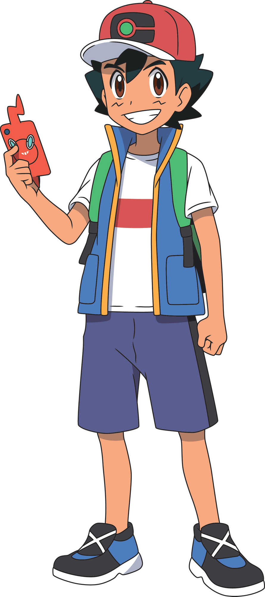
Ash Ketchum
Ash Ketchum is the main character of the Pokémon anime. He is a Pokémon Trainer from Pallet Town whose goal is to become a Pokémon Master. His starter Pokémon was a Pikachu that he received from Professor Oak after arriving late at his laboratory. In Pokémon the Series: Sun & Moon, he becomes the first Champion of the Alola region's Pokémon League. He shares his Japanese name with the creator of the Pokémon franchise, Satoshi Tajiri. His English surname is a pun of the English motto, “Gotta catch 'em all!.”
Note: Any of Ash's Pokémon do not list their either devolved state, including their egg, from “Shadow at the Gates of Warp!”, the English dub title of the episode from the Master Journeys season of the Journeys series of the Pokémon main anime, so that all the spoilers are avoided I think.
Ash Ketchum's Pokémon Listings
On Hand
1. Pikachu <-> Gigantamax Pikachu♂
2. Dragonite
3. Gengar <-> Gigantamax Gengar
4. Egg --> Riolu --> Lucario <-> Mega Lucario
5. Galarian Farfetch'd --> Sirfetch’d
6. Fossilized Fish & Drake --> Dracovish
At Professor Oak’s Laboratory
1. Bulbasaur
2. Charmander --> Charmeleon --> Charizard♂
3. Krabby --> Kingler
4. Kantonian Muk
5. Tauros (x30)
6. Snorlax
7. Heracross♂
8. Chikorita --> Bayleef♀
9. Cyndaquil --> Quilava
10. Totodile♂
11. Noctowl
12. Egg --> Phanpy --> Donphan
13. Taillow --> Swellow
14. Treecko --> Grovyle --> Sceptile
15. Corphish
16. Torkoal
17. Snorunt --> Glalie
18. Starly --> Staravia --> Staraptor
19. Turtwig --> Grotle --> Torterra♂
20. Chimchar --> Monferno --> Infernape♂
21. Buizel♂
22. Gligar --> Gliscor
23. Gible♂
24. Pidove --> Tranquill --> Unfezant♀
25. Oshawott♂
26. Tepig --> Pignite♂
27. Snivy♀
28. Scraggy♂
29. Sewaddle --> Swadloon --> Leavanny♂
30. Palpitoad♂
31. Roggenrola --> Boldore
32. Krokorok --> Krookodile♂
33. Fletchling --> Fletchinder --> Talonflame
34. Hawlucha♂
35. Egg --> Noibat --> Noivern♂
At Professors Kukui and Burnet’s Home
36. Rowlet
37. Rockruff --> Lycanroc
38. Litten --> Torracat --> Incineroar
39. Meltan --> Melmetal
In Training
40. Squirtle
41. Primeape
At the Cerise Laboratory
42. Mimey (Mr. Mime)
Released
43. Caterpie --> Metapod --> Butterfree♂
44. Pidgey --> Pidgeotto --> Pidgeot
45. Lapras
46. Froakie --> Frogadier --> Greninja <-> Ash-Greninja
47. Goomy --> Sliggoo --> Goodra
48. Poipole --> Naganadel
Traded Away
49. Raticate
50. Aipom
Given Away
51. Beedrill
Fillable Poll
Click here to fill out my poll available that talks about Ash's currently and formerly officially owned Pokémon, besides Pikachu as the only one of them on hand to always decline to evolve.
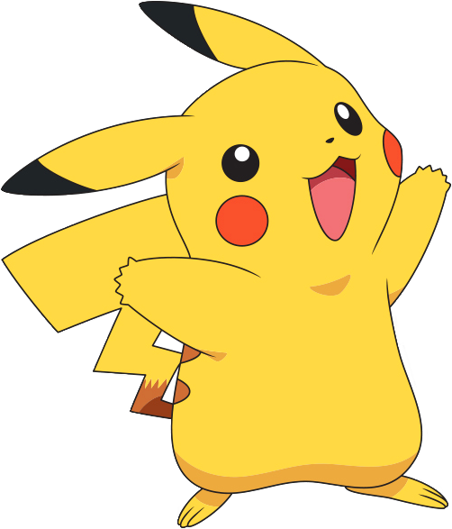
Ash's Pikachu
Ash's Pikachu is the signature Pokémon of the Pokémon anime, and the first Pokémon that Ash obtained on his journey as a Pokémon Trainer, given to him by Professor Oak. Pikachu travels outside his Poké Ball.
Note: This Pokémon does not list his actual devolved state nor reverted egg state shown in “Showdown at the Gates of Warp!”, the English dub title of the episodes from the Master Journeys season from the Journeys series from the Pokémon main anime prior to to having right now returned to his pre-devolved and pre-reverted egg state, so that all the spoilers are avoided.
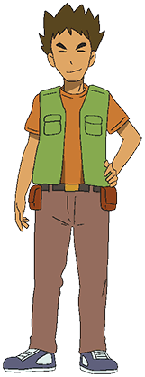
Brock
Brock is an aspiring Pokémon Doctor from Pewter City and a former traveling partner of Ash. He used to be the Gym Leader of the Pewter Gym, handing out the Boulder Badge to Trainers who defeated him. Brock journeyed with Ash through the Kanto, Johto, Hoenn, and Sinnoh regions in his pursuit of improving his skills as a Pokémon Breeder. Eventually, he decided to return home and study to become a Pokémon Doctor.
Brock's Pokémon Listings
On Hand
1. Onix --> Steelix <-> Mega Steelix
2. Geodude
3. Zubat --> Golbat --> Crobat
4. Bonsly --> Sudowoodo♂
5. Croagunk♂
6. Egg --> Happiny --> Chansey --> Blisssey♀
7. Comfey
At Pewter Gym/Home
1. Pineco --> Forretress
2. Lotad --> Lombre --> Ludicolo
3. Mudkip --> Marshtomp
Returned
1. Kantonian Vulpix
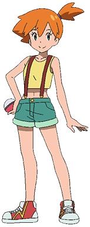
Misty
Misty is an aspiring Water Pokémon Master and a former traveling partner of Ash. She is also the Gym Leader of the Cerulean Gym, handing out the Cascade Badge to Trainers who defeat her. She specializes in Water-type Pokémon. Misty journeyed with Ash through Kanto, the Orange Islands, and Johto, sharpening her skills as a Water-type Trainer along the way. Eventually, she decided to return home to preside over her family's Gym.
Misty's Pokémon Listings
On Hand
1. Staryu
2. Psyduck
3. Corsola
4. Gyarados <-> Mega Gyarados
At Cerulean Gym
1. Goldeen
2. Starmie
3. Horsea
4. Poliwag --> Poliwhirl --> Politoed
Caserin (Luvdisc)♂
Egg --> Azurill
Released
1. Togepi --> Togetic
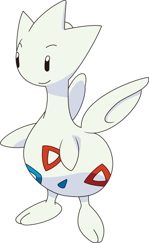
Togetic (Anime)
Togetic was the Pokémon acquired by Misty in the Kanto region. It was a Togepi for the most part of its journey with Misty.
Tracey Sketchit
Tracey Sketchit is a Pokémon watcher and a former traveling companion of Ash who currently works at Professor Oak's Laboratory as an assistant to Professor Oak. He made his debut appearance in The Lost Lapras.
Tracey's Pokémon Listings
On Hand
1. Venonat
2. Marill
3. Scyther
Given Away
1. Azurill's Egg
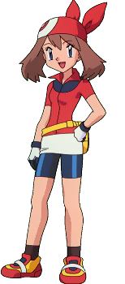
May
May is a ten-year-old Pokémon Coordinator from Petalburg City and a former traveling companion of Ash. She is the daughter of Norman and Caroline, and her starter Pokémon was a Torchic given to her by Professor Birch. Initially on a journey to meet new places, May found her true calling in Pokémon Contests and made it her goal to become a Top Coordinator. She traveled through Hoenn and Kanto with Ash, Brock, and her little brother Max.
May's Pokémon Listings
On Hand
1. Torchic --> Comnbusken --> Blaziken
2. Wurmple --> Silcoon --> Beautifly
3. Skitty
4. Bulbasaur --> Ivysaur --> Venusaur♀
5. Munchlax
6. Squirtle --> Wartortle
7. Egg --> Eevee --> Glaceon
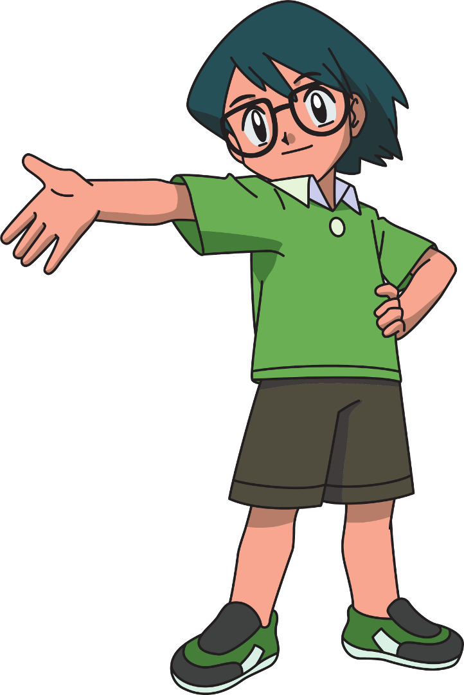
Max
Max is an aspiring Pokémon Trainer and a former traveling companion of Ash. He is the younger brother of May and the son of Norman and Caroline. Since he is underaged to be a Pokémon trainer, he frequently just befriends Pokémon without actually owning any of them. He made his debut appearance in There's no Place Like Hoenn.
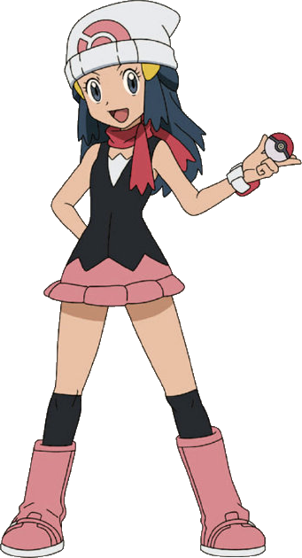
Dawn
Dawn is a ten-year-old Pokémon Coordinator from Twinleaf Town and a former traveling companion of Ash and Brock. Her goal is to become a great Top Coordinator like her mother, Johanna. Her first Pokémon was a Piplup that she received from Professor Rowan in the first episode of Pokémon the Series: Diamond and Pearl.
Note: Any of Dawn's Pokémon do not include their either devolved state, including their egg, from “Shadow at the Gates of Warp!”, the English dub title of the episode from the Master Journeys season of the Journeys series of the Pokémon main anime, so that all the spoilers are avoided I think.
Dawn's Pokémon Listings
On Hand
1. Piplup♂
2. Buneary
3. Pachirisu
4. Swinub --> Piloswine -->Mamoswine
5. Egg --> Cyndaquil --> Quilava
6. Togekiss♀
In Training
1. Aipom --> Ambipom
Traded Away
1. Buizel♂
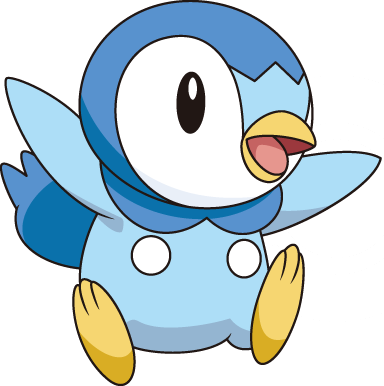
Dawn's Piplup
Dawn's Piplup was the Pokémon that Dawn obtained at the beginning of her travels in Sinnoh, given to her by Professor Rowan. Dawn and her Piplup bonded with each after they saved each other from the group of wild Ariados. Piplup doesn't really seem to like the idea of evolving, so it holds an Everstone. Though Piplup is a male, he wears cheerleading outfits while cheering for Dawn in contests.
Note: This Pokémon does not list his actual reverted egg state shown in “Showdown at the Gates of Warp!”, the English dub title of the episodes from the Master Journeys season from the Journeys series from the Pokémon main anime prior to to having right now returned to his pre-devolved and pre-reverted egg state, so that all the spoilers are avoided.
Cilan
Cilan is an A-class Pokémon Connoisseur and a former traveling companion of Ash. After his defeat by Ash, he decided to join the young trainer and Iris on their journey through the Unova region. His two brothers, Chili and Cress, are also Gym Leaders. He made his debut inTriple Leaders, Team Threats!.
Cilan's Pokémon Listings
On Hand
1. Pansage♂
2. Dwebble --> Crustle
3. Stunfisk
Released
1. Basculin
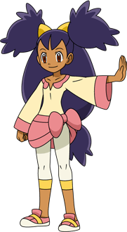
Iris
Iris is an aspiring Dragon Master and a former traveling companion of Ash who debuted in In the Shadow of Zekrom!. She takes on the role similar to Misty's. As such, a running gag consists of her calling Ash a little kid, more recently just to tease him which annoys him. Iris is also the current Pokémon Champion of Unova. In Pokémon Journeys: The Series, she was revealed to have become the Champion of Unova.
Iris's Pokémon Listings
On Hand
1. Axew --> Fraxure > Haxorus♂
2. Drilbur --> Excadrill♂
3. Emolga♀
4. Dragonite♂
5. Gible♂
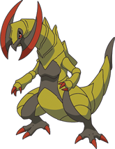
Iris's Haxorus
Iris's Haxorus was one of the two Pokémon acquired by Iris prior to the start of Pokémon the Series: Black & White, and her second one overall. He is the main character Pokémon as originally Axew from this series. In Pokémon Journeys: The Series, he is revealed to have fully evolved into now Haxorus.
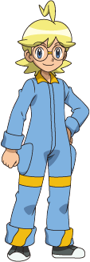
Clemont
Clemont is the Gym Leader of the Lumiose Gym, the aspiring inventor, and a former traveling companion of Ash. He made his debut in Kalos, Where Dreams and Adventures Begin! along with his younger sister, Bonnie. He gives out the Voltage Badge to those who beat him or Clembot. He lives in the Kalos region and a friend of Ash Ketchum. Clemont and his younger sister Bonnie joined Ash on his journey throughout Kalos, and eventually, he and Bonnie part ways with Ash after Ash decided to head to the Alola region.
Clemont's Pokémon Listings
On Hand
1. Bunnelby --> Diggersby♂
2. Chespin
3. Luxio --> Luxray♂
With Bonnie
1. Dedenne
At the Lumiose Gym
1. Magnemite
1. Magneton
1. Helioptile -->Heliolisk
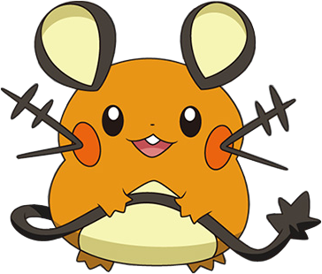
Clemont's Dedenne
Clemont's Dedenne was the first Pokémon that Clemont caught during his journey through the Kalos region, and his fifth overall. He caught him at Bonnie's request so she can care for him, as she is not old enough yet to be a Pokémon Trainer.
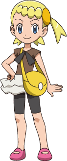
Bonnie
Bonnie is an aspiring Pokémon Trainer and a former traveling companion of Ash. She made her debut appearance in Kalos, Where Dreams and Adventures Begin! along with her older brother, Clemont.
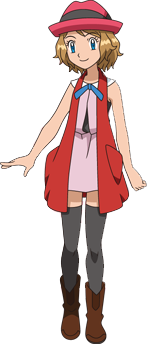
Serena
Serena is a Pokémon Performer and a former traveling companion of Ash, who debuted in Kalos, Where Dreams and Adventures Begin!. Her first Pokémon was a Fennekin that she received from Professor Sycamore. Her main goal is to be named Kalos Queen, the highest prestige achievable for Pokémon Performers, until she fails is she has lost to Aria in the finals, in which Aria has become named Kalos Queen. She and Ash met before the events of the series, where Ash aided her in her time of need. She developed a crush on him from that day on, and it became one of her most notable characteristics, evident through her blushing whenever she looks at, talks to or is amazed by him when battling.
Serena's Pokémon Listings
On Hand
1. Fennekin --> Braixen --> Delphox♀
2. Pancham♂
3. Eevee --> Sylveon♀
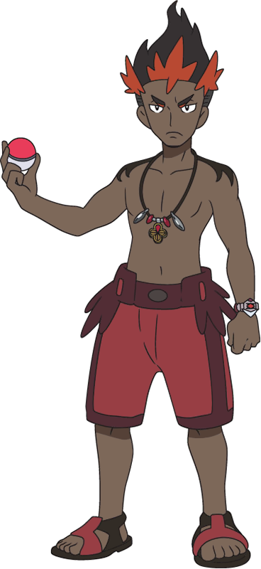
Kiawe
Kiawe is a student at the Pokémon School on Melemele Island and one of Ash's former classmates. He made his debut in Alola to New Adventure!. By the end of the series he decided to become Olivia's apprentice in order to achieve his dream of becoming Akala Island's Kahuna.
Kiawe's Pokémon Listings
On Hand
1. Ride Charizard
2. Turtonator
3. Marowak
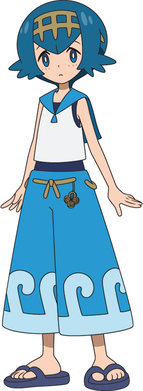
Lana
Lana is a student at the Pokémon School on Melemele Island and one of Ash's former classmates. She made her debut in Alola to New Adventure!.
Kiawe's Pokémon Listings
On Hand
1. Popplio --> Brionne --> Primarina
2. Sandy (Eevee)
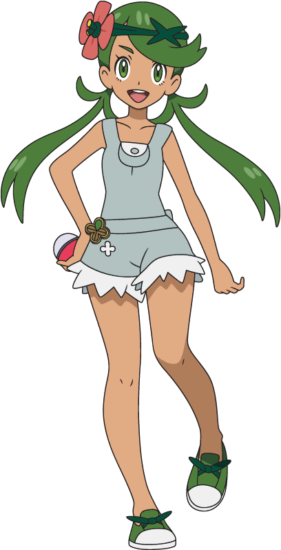
Mallow
Mallow is a student at the Pokémon School on Melemele Island and one of Ash's former classmates. She debuted in Alola to New Adventure!.
Mallow's Pokémon Listings
On Hand
1. Bounsweet --> Steenee --> Tsareena♀
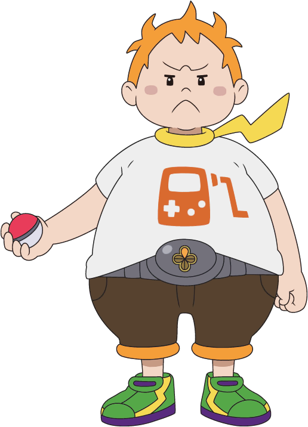
Sophocles
Sophocles is a student at the Pokémon School on Melemele Island and one of Ash's former classmates. He debuted in Alola to New Adventure!.
Sophocles's Pokémon Listings
On Hand
1. Togedemaru♀
1. Charjabug --> Vikavolt
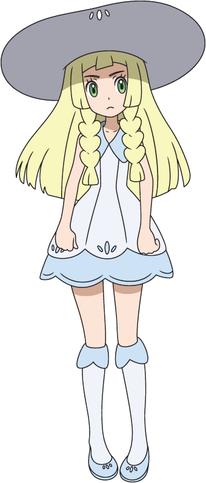
Lillie
Lillie is a student at the Pokémon School on Melemele Island and one of Ash's former classmates. She made her debut in Alola to New Adventure!.
Lillie's Pokémon Listings
On Hand
1. Snowy (Alolan Vulpix)
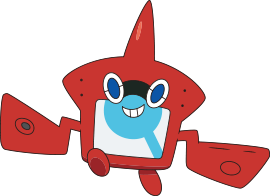
Rotom Pokédex
The Rotom Pokédex, commonly referred to simply as Rotom Dex, is a main Pokémon character in the anime and Ash's Pokédex in Pokémon the Series: Sun & Moon.
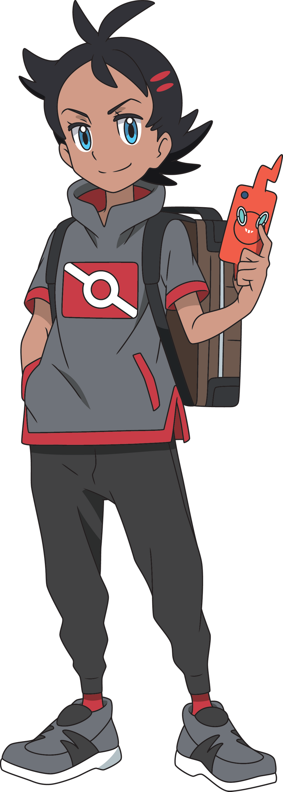
Goh
Goh is a protagonist of Pokémon Journeys: The Series of the Pokémon anime, and one of Ash's traveling companions. His goal is to catch Mew, while his dream is to catch every Pokémon.
Note: Any of Goh's Pokémon do not include their either devolved state, including their egg, from “Shadow at the Gates of Warp!”, the English dub title of the episode from the Master Journeys season of the Journeys series of the Pokémon main anime, so that all the spoilers are avoided I think.
Goh's Pokémon Listings
On Hand
1. Scorbunny --> Raboot --> Cinderace
1. Sobble --> Drizzile --> Inteleon
1. Grookey
At Cerise Laboratory
1. Caterpie
2. Pinsir
3. Beedrill
4. Scyther --> Scizor
5. Mantyke
6. Dewgong
7. Skowvet --> Greedent
8. Darmanitan
9. Golurk
10. Kantonian Farfetch'd
11. Magikarp
12. Heracross♂
13. Pikachu --> Kantonian Raichu
14. Flygon
15. Old Amber --> Aerodactyl
16. Boldore
17. Suicune
18. Absol
19. Panpour
20. Froakie --> Frogadier
17. Various Others
Released
1. Flabébé --> Floette
2. Alolan Ninetales
3. Cyndaquil
Traded Away
1. Pinsir
Given Away
1. Dugtrio
Sealed Away
1. Eternatus
The Antagonists
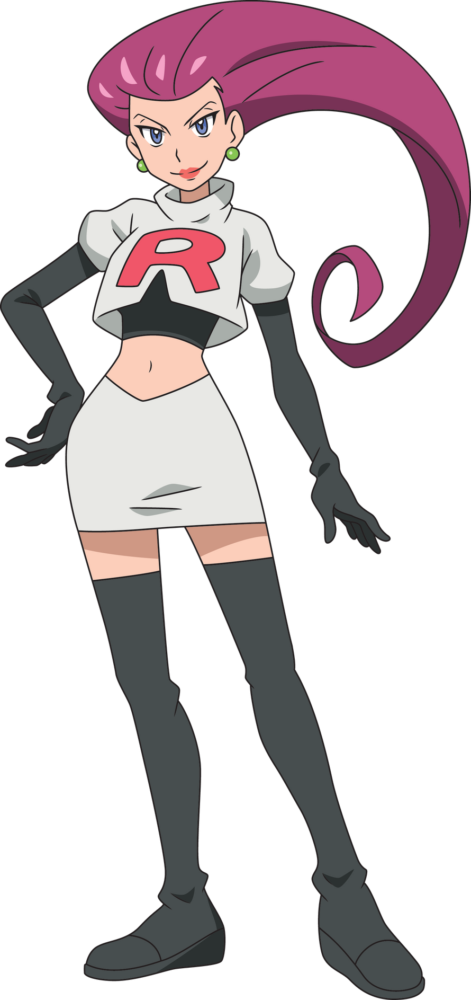
Jessie
Jessie is a member of Team Rocket, more specifically part of a trio with James and Meowth, that follows Ash and his friends around in the Pokémon anime, usually trying to steal Ash's Pikachu.
Jessie's Pokémon Listings
On Hand
1. Wobbuffet
At Team Rocket's Headquarters
1. Seviper
2. Yanma -->Yanmega♀
3. Pumpkaboo --> Gourgeist♀
Released
1. Ekans --> Arbok
2. Wurmple -->Cascoon --> Dustox♀
3. Mimikyu
Traded Away
1. Lickitung
2. Mawile
Given Away
1. Woobat♂
2. Frillish♀
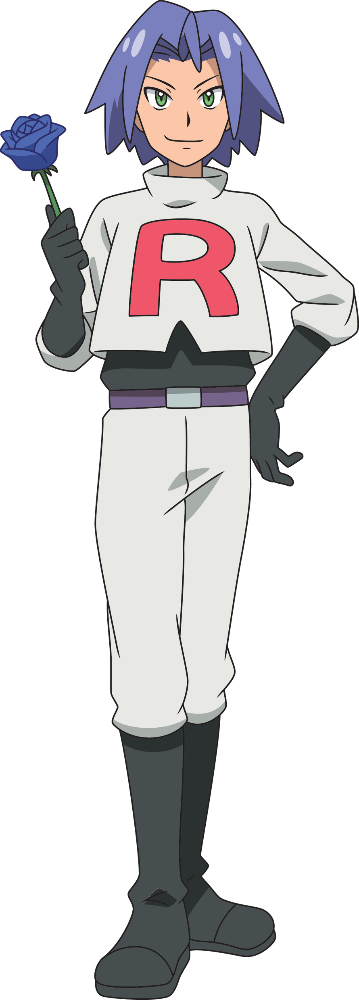
James
James is a member of Team Rocket, more specifically part of a trio with Jessie and Meowth, that follows Ash Ketchum and his friends around in the Pokémon anime, usually trying to steal Ash's Pikachu.
James' Pokémon Listings
On Hand
1. Morpeko
At Team Rocket's Headquarters
1. Mime Jr.
2. Carnivine
3. Inkay
In Training
1. Cacnea
At Home
1. Growlie (Growlithe)
2. Chimecho
Released
1. Koffing --> Weezing
2. Magikarp -->Gyarados
3. Weepinbell --> Victreebel
Mareanie♀
Given Away
1. Yamask♂
2. Amoonguss
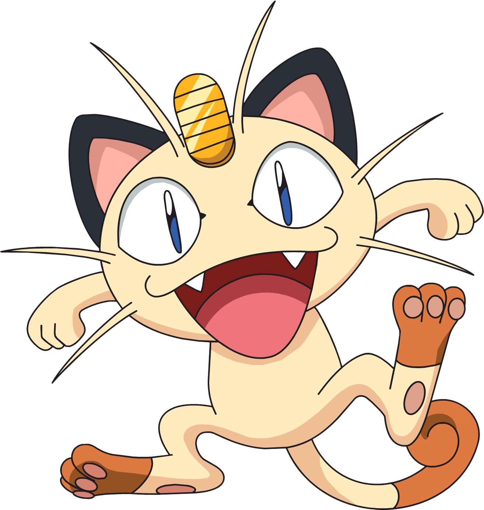
Meowth
Meowth is a member of Team Rocket, more specifically part of a trio with Jessie and James, that follows Ash Ketchum and his friends around in the Pokémon anime, usually trying to steal Ash's Pikachu. His major difference from other Meowth, and nearly all other Pokémon, is that he can talk and walk on two legs like a human.
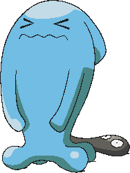
Jessie's Wobbuffet
Jessie's Wobbuffet was the only Pokémon obtained by Jessie during her travels through Johto, and her fourth overall.
Pokémon Main Anime Staff Writer Interview 2022
Hey, guys. Check out the 2022 Pokémon main anime staff writer interview about the Pocket Monsters 2019 new series, plus the future of the Scarlet or Violet or other new series right after that by clicking this link here, thanks.:)
Live-Action/CGI Works
Films
Pokémon: Detective Pikachu
A young man named Tim Goodman partners up with a talking Detective Pikachu to solve the mystery of his missing father Harry Goodman. However, Tim must stop founding Clifford Industries, Inc. former visionary and chairman turned criminal mastermind Howard Clifford from his evil plan to publicly endanger all lives of all innocent Ryme City victims. Ever since Howard's arrest and defeat for all his evildoing crimes, Tim manages to find and reunite with his father Harry Goodman by Mewtwo agreeing his convincement to defuse his father and Detective Pikachu from each other at the end of this film.
TV Programs
Untitled Pokémon Live-Action/CGI Series
The Untitled Pokémon Live-Action/CGI TV series has been confirmed for the American Netflix. But we don't know that the actual story is all about, and we don't know who the characters, both humans and Pokémon in this series, whether or not they're Ash Ketchum and his Pikachu. But it's a mystery, and we'll find out and see. That's all :)